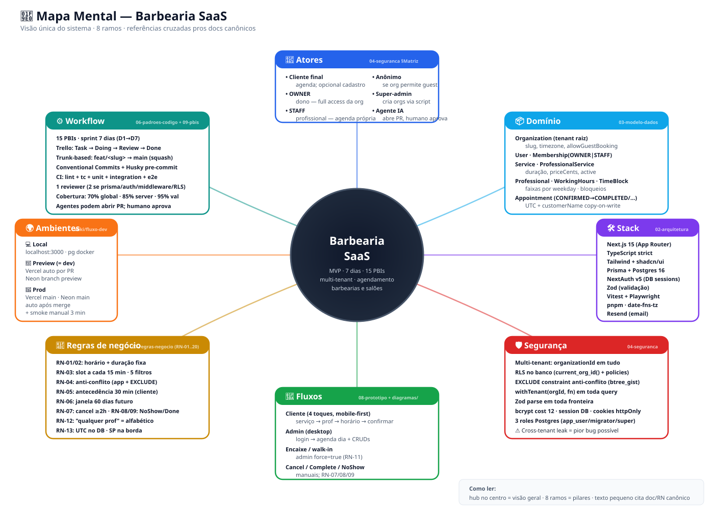
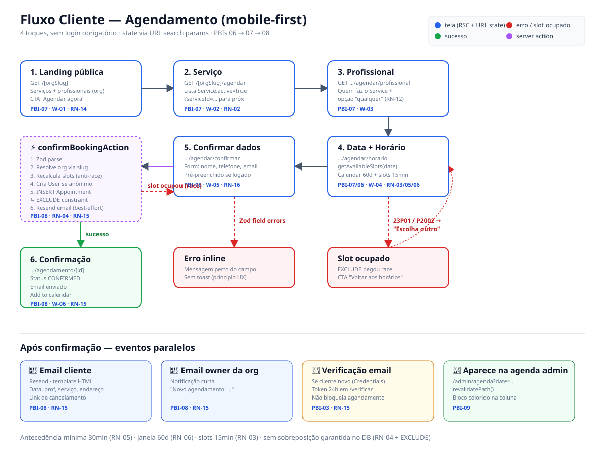
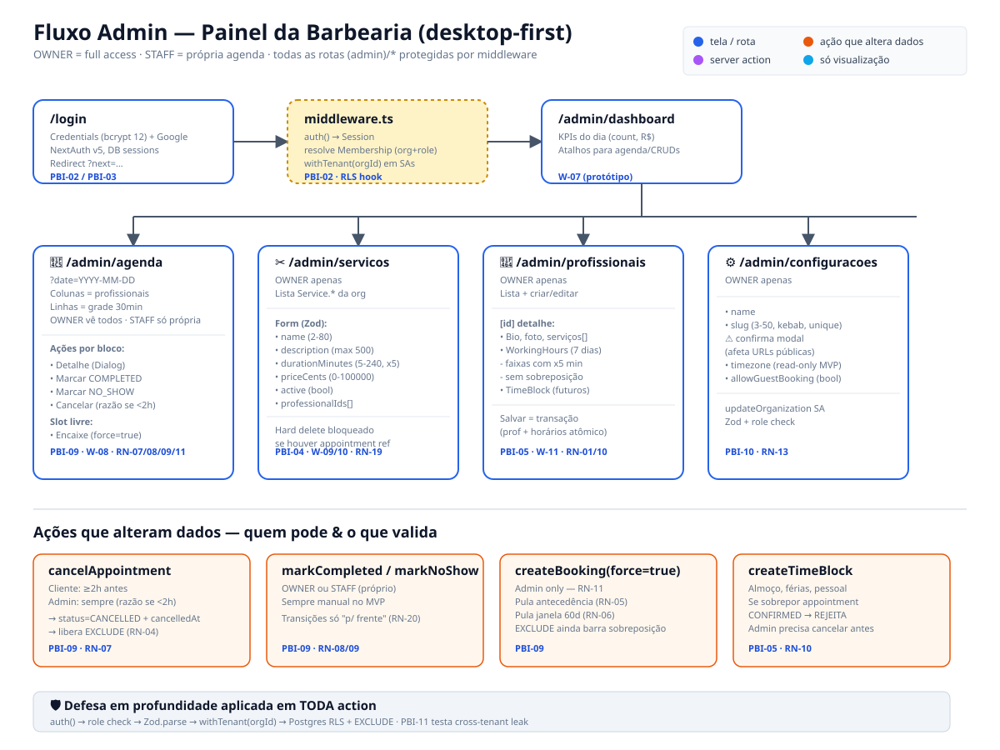
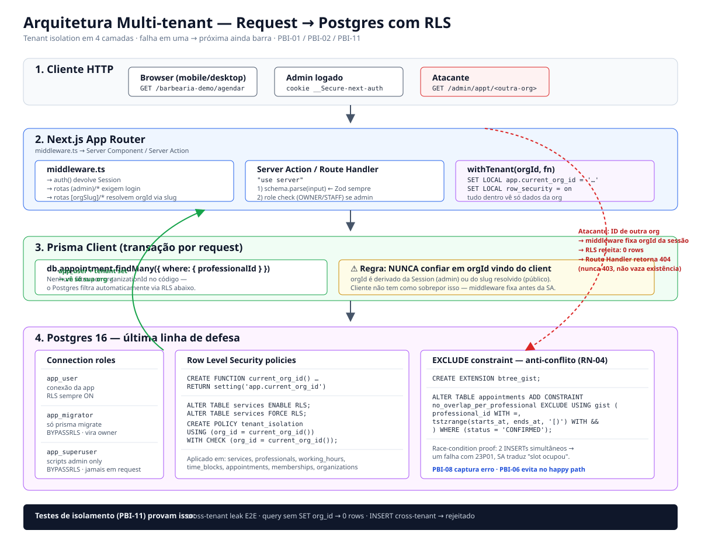
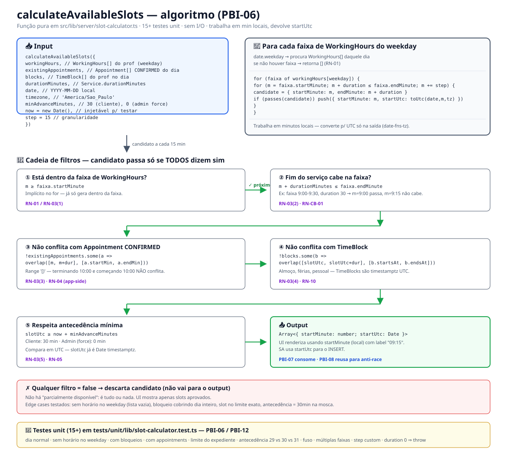

🧠 Mapa Mental — Sistema inteiro em uma tela
Hub central + 8 ramos: atores · domínio · stack · segurança · fluxos · regras · ambientes · workflow. Cada ramo cita o doc canônico (RN-XX, número do doc) pra aprofundar.

① Fluxo Cliente — Agendamento
Os 4 toques: landing → serviço → profissional → horário → confirmar → sucesso. State 100% via URL search params. Ramos de erro inline (Zod) e slot ocupado (EXCLUDE constraint).

② Fluxo Admin — Painel da Barbearia
Login (NextAuth v5) → middleware com sessão+orgId → dashboard. Ramos: agenda do dia, CRUDs (serviços, profissionais + horários + bloqueios), configurações. Ações que alteram dados destacadas em laranja.

③ Arquitetura Multi-tenant — Defesa em 4 camadas
Como uma request atravessa Cliente → Next.js (middleware + Server Action + Zod) → withTenant → Postgres com RLS + EXCLUDE. Mostra também o caminho do atacante e por que ele para no RLS (404, não 403). Falha em uma camada = próxima ainda barra.

④ Algoritmo Slot Calculator — coração do produto
calculateAvailableSlots: input (workingHours, appointments, blocks, duration, date, tz, minAdvance, now, step) → loop por candidato a cada 15min → 5 filtros (RN-03/04/05) → output Array<{startMinute, startUtc}>. Sem I/O, testável de cabo a rabo.

⑤ Fluxo Dev → Prod — como toda PBI sai do local
3 lanes: Local (4 passos) → Preview/Dev (CI + Vercel + QA + reviewer) → Prod (deploy automático após merge + smoke manual 3 min). Inclui rollback em < 5 min se algo der ruim.